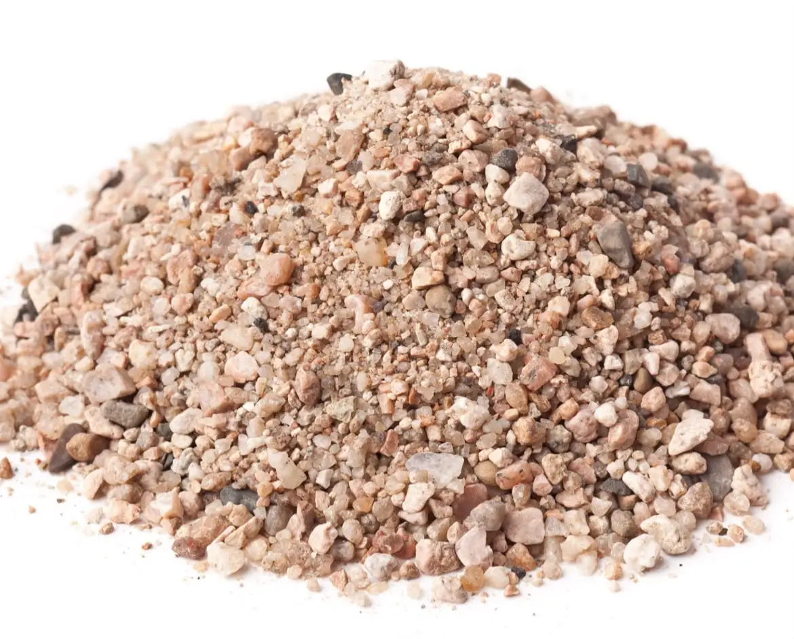

Coarse Sand
Product Code: P032
RS CONSTRUCTIONS supplies premium-quality Coarse Sand manufactured in compliance with IS 383 specifications. Featuring sharp angular particles and near-zero organic silt impurities, our Zone I and Zone II coarse sand ensures optimal cement paste bonding, reduces drying shrinkage, and delivers maximum compressive strength in structural concrete.
Technical Specifications & Properties
- Grading Zone: Zone I & Zone II (IS 383 : 2016 Compliant)
- Particle Size Range: $0.15\text{ mm}$ to $4.75\text{ mm}$ coarse fraction
- Fineness Modulus (FM): $2.90$ to $3.50$ (Ideal coarse particle mix)
- Silt Content: Below $3\%$ (Washed for superior adhesion)
- Bulk Density: $1,550\text{ kg/m}^3$ to $1,650\text{ kg/m}^3$ (Compacted)
- Supply Unit: Per Brass (100 cu.ft), Cubic Meter, or Tipper Truck loads
- Tax Rate: 5% GST (Applicable)
Recommended Applications
1. Reinforced Cement Concrete (RCC) Structural Elements
The standard coarse fine aggregate choice for mixing M20, M25, M30 and higher-grade concrete used in footings, RCC columns, beams, and roof slabs.
2. Heavy Brickwork & Foundation Bedding
Provides robust compressive strength in thick mortar joints for load-bearing brickwork, stone masonry, and leveling coarse beds under flooring paving.
Get a Wholesale Price Quote
Contact our sales team today for bulk pricing, brass rates, and site delivery arrangements.
Request Sand Quote